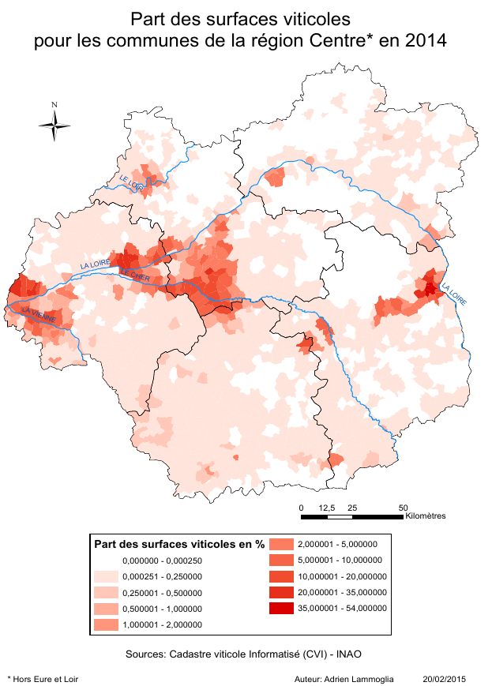

Simulation des dynamiques spatiales d'un territoire agro-viticole
premier pas vers le modèle VitiTerroir
Présentation : Etienne DELAY Avec : Adrien LAMMOGLIA, Samuel LETURCQ et Éric ROUVELLAC
Rencontres ThéoQuant - 20-22 mai 2015 Besançon (CCI du Doubs)
La génèse de VitiTerroir : VIcTOr
Dion still alive et VicTor
deux modèles "concept Driven" qui se sont enrichit l'un l'autre
Objet d'étude : les paysages viticoles
Comment explorer des comportements passés pour en comprendre les configurations actuelles ?
 Le vignoble de Banyuls-sur-Mer
Le vignoble de Banyuls-sur-Mer
En s'intéressant aux zones catastrophiques (au sens de R.Thom 1989) pour approcher les limites de validité du modèle.
Prédire ≠ Expliquer
“L'expérimentation par elle-même ne peut guère conduire à des progrès [...]. Elle peut permettre de contrôler que si on à une théorie, donc si l'on dispose d'outils d'exploration. La théorisation [...] est liée à la possibilité de plonger le réel dans un virtuel imaginaire, doté de propriétés génératives[...]”
R. Thom 2009

Formalisation
Deux modèles "concept driven"
- Dion Still Alive : initié en réponse à un article de Banos et al. proposant de revisiter les travaux classiques des théories géographiques. Pour nous R.Dion, 1952, " Querelle Des Anciens et Des Modernes Sur Les Facteurs de La Qualité Du Vin"
- VicTor : initié avec S. Leturcq et X. Rodier (LAT) pour explorer les basculements sur le temps long d'une viticulture de subsistance à une viticulture d'exportation. Quelles sont les conséquences de la compétition spatiale entre différents types d'agriculture et leurs réponses à différents marchés.
Dion & Victor


Ce qui va nous intéresser :
- L'évolution de la qualité dans le temps
- L'ordonnancement des facteurs qui jouent sur cette qualité
- L'influence de la compétition pour l'espace de deux productions agricoles
- L'influence sur cette compétition de l'évolution des marchés
Dion Still Alive
La qualité est-elle une fonction du temps ?
VIcTOr
Hétérogénéité spatiale et adaptation au marché
Les possibilités
- Plonger le réel dans un virtuel imaginaire, doté de propriétés génératives → Théorisation
Les échelles
- spatiale : régions
- temporelle : l'année (une campagne de culture)
La naissance de VitiTerroir
Le manifeste
L’hypothèse : les interactions jouent un rôle-clef dans l’organisation de la filière viti-vinicole et impacte largement la transformation des territoires et des paysages viticoles.
L’objectif : développer une palette de modèles propres à chaque discipline, permettant de simuler (de manière indépendante) l’impact des multiples facteurs sur le fonctionnement des systèmes viti-vinicoles.
Résolument interdiciplinaire : historiens, archéologues, géographes, biologistes, géologues, juriste, économistes, interprofession.
le site du projet : http://vititerroi.hypotheses.org/
Un modèle pour les gouverner tous ?
Par la suite, nous proposons de regrouper les modèles au sein d’un même simulateur pour créer un méta-modèle capable de simuler la dynamique complexe des territoires viticoles en prenant en compte, cette fois-ci, l’interaction des processus étudiés en amont (facteurs économiques, sociaux, historiques, géologiques, biologiques, etc.).
crédit photo : Ssolbergj on Wikipedia{kind=link}
L'ambition
Cet outil à dimension prospective permettra aussi d’affiner la compréhension historique des territoires viticoles ligériens et de renforcer leur caractère patrimonial.
crédit photo : Oscar Gende Villar on Flick'rOrientations et premiers résultats
Plusieurs échelle est type de modèles
Des modèles :
- KISS (Keep It Simply and Stupide), et stylisé pour les juriste et économistes
- À petite échelle spatiale et KIDS (Keep It Descriptive and stupide) pour les historiens et géographes
- À très grande échelle spatiale et KIDS pour les geologues et biologistes
Focus sur l'espace
- La Touraine : en temps qu'objet centrale de l'étude
- Le Bergerac : comme vignoble témoins
Explorer et comprendre les mécanismes et les objectifs qui sont mobiliser par les sociétés viticoles
Premiers résultats

Les facteurs et les tendances :
- Des surfaces viticoles en baisses sur les 50 dernières années
- Une réduction des surfaces en "AOC généraliste"
- Bergerac, une spécialisation des coteaux
Les difficultés à venir pour la modélisation
La modélisation est pour l'instant utiliser comme un outils d'accompagnement de la rechercher et de la creation de savoir pour les chercheurs
- Les échelles spatial et temporelle imbriqué
- Des construction interdiciplinaire à partagé
- La diversité d'agents modélisés
Conclusion
Force et faiblesse
On peut souligner (si besoin) le caractère complexe des systèmes viti-vinicoles. Il importe donc de prendre garde à :
- la diversité d'échelles spatiales
- la diversité d'agents modélisés
- etc.
qui modifient la manière dont on appréhende la combinaison de trois sous-systèmes : le sociosystème, l’écosystème et le géosystème
Les SMA permettent :
- d'accompagner la réflexion du chercheur
- d'explorer des comportements et des configurations difficilement envisageables
- de préparer à la réception et à l'identification de comportements réels
Deux mouvements parallèles
- Un mouvement historique : ou la formalisation des interactions sera plus conceptuelle et schématique (KISS) → Expliquer
- Un mouvement à échelles imbriquées, plus descriptif ou les interactions auront une granularité plus fine (KIDS) → prédire/accompagner
Merci de votre Attention

Retrouvez cette présentation sur GitHub : http://unil.im/uJPV2
 réalisé avec reveal.js
crédit photo : Thomas Misnyovszki on Flick'r
réalisé avec reveal.js
crédit photo : Thomas Misnyovszki on Flick'r